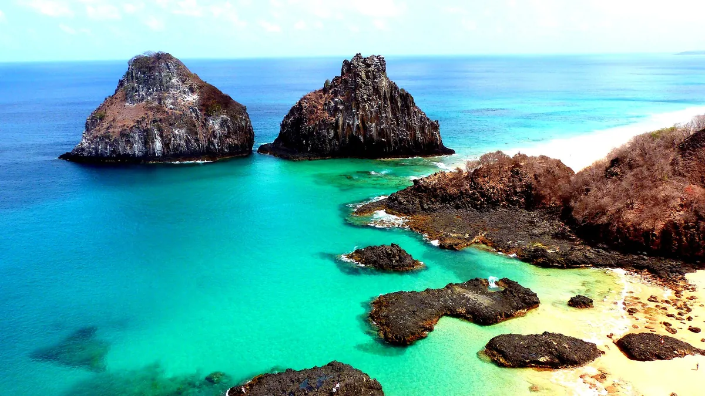

Início › Destinos › Fernando de Noronha › Taxa ambiental (TPA)
TPA de Fernando de Noronha: quanto custa por dia
A tabela oficial de 2026, de 1 a 30 dias, com o custo médio por dia e quanto custa cada dia a mais. Do 6º ao 10º dia, o dia a mais é o mais barato da tabela; no 11º a conta vira.
Apurado por Allan Vitor · @viagemnalupabr (abre em outra aba)

Foto: Elder Virginio · CC BY-SA 3.0 · Wikimedia Commons · recortada
A tabela tem três faixas: do 1º ao 4º dia, cada dia custa R$ 105,79; o 5º, R$ 97,33; do 6º ao 10º, R$ 76,17 cada. No 11º, o total salta para R$ 1.028,31, e daí em diante cada dia custa mais que o de antes. Quem pensa em ficar 11 dias paga R$ 126,95 a mais que quem fica 10, e o 30º dia sozinho custa R$ 528,97.
De 1 a 30 dias
Fonte: Administração do Distrito Estadual de Fernando de Noronha, portal oficial (noronha.pe.gov.br), tabela de permanência da TPA 2026, consultada em 29 de outubro de 2026. A coluna do total é a da tabela; as outras duas são contas nossas sobre ela.
| Dias | Total | Média por dia | Só este dia |
|---|---|---|---|
| 1 | R$ 105,79 | R$ 105,79 | R$ 105,79 |
| 2 | R$ 211,59 | R$ 105,80 | R$ 105,80 |
| 3 | R$ 317,38 | R$ 105,79 | R$ 105,79 |
| 4 | R$ 423,17 | R$ 105,79 | R$ 105,79 |
| 5 | R$ 520,50 | R$ 104,10 | R$ 97,33 |
| 6 | R$ 596,68 | R$ 99,45 | R$ 76,18 |
| 7 | R$ 672,85 | R$ 96,12 | R$ 76,17 |
| 8 | R$ 749,02 | R$ 93,63 | R$ 76,17 |
| 9 | R$ 825,19 | R$ 91,69 | R$ 76,17 |
| 10 | R$ 901,36 | R$ 90,14 | R$ 76,17 |
| 11 | R$ 1.028,31 | R$ 93,48 | R$ 126,95 |
| 12 | R$ 1.176,42 | R$ 98,04 | R$ 148,11 |
| 13 | R$ 1.345,69 | R$ 103,51 | R$ 169,27 |
| 14 | R$ 1.536,12 | R$ 109,72 | R$ 190,43 |
| 15 | R$ 1.747,71 | R$ 116,51 | R$ 211,59 |
| 16 | R$ 1.980,45 | R$ 123,78 | R$ 232,74 |
| 17 | R$ 2.234,36 | R$ 131,43 | R$ 253,91 |
| 18 | R$ 2.509,42 | R$ 139,41 | R$ 275,06 |
| 19 | R$ 2.805,64 | R$ 147,67 | R$ 296,22 |
| 20 | R$ 3.123,02 | R$ 156,15 | R$ 317,38 |
| 21 | R$ 3.461,56 | R$ 164,84 | R$ 338,54 |
| 22 | R$ 3.821,26 | R$ 173,69 | R$ 359,70 |
| 23 | R$ 4.202,12 | R$ 182,70 | R$ 380,86 |
| 24 | R$ 4.604,13 | R$ 191,84 | R$ 402,01 |
| 25 | R$ 5.027,31 | R$ 201,09 | R$ 423,18 |
| 26 | R$ 5.471,64 | R$ 210,45 | R$ 444,33 |
| 27 | R$ 5.937,13 | R$ 219,89 | R$ 465,49 |
| 28 | R$ 6.423,78 | R$ 229,42 | R$ 486,65 |
| 29 | R$ 6.931,59 | R$ 239,02 | R$ 507,81 |
| 30 | R$ 7.460,56 | R$ 248,69 | R$ 528,97 |
Do 6º ao 10º dia, acrescentar um dia custa R$ 76,17 — o mais barato da tabela. As linhas marcadas são o 10º e o 11º, onde a conta vira. Diferenças de um centavo entre dias vizinhos vêm do arredondamento da própria tabela.
Chegada e partida contam?
Lacuna declarada A tabela fala em “dias de permanência” e não diz se o dia da chegada e o da partida contam. Uma viagem de 4 noites pode ser cobrada como 4 dias (R$ 423,17) ou como 5 (R$ 520,50). O site de pagamento pede as datas e calcula.
A ficha de custos usa 5 dias para 4 noites, o maior dos dois.
TPA e ingresso do Parque, somados
O ingresso do Parque Nacional Marinho é do ICMBio, não do Distrito: R$ 192,00 para brasileiro e R$ 384,00 para o público geral, válido por 10 dias (Portaria ICMBio 4.423/2025, página consultada em 29 de outubro de 2026). Menor de 12 anos e brasileiro acima de 60 não pagam o ingresso — mas pagam a TPA.
- 3 dias: TPA R$ 317,38 + ingresso R$ 192,00 = R$ 509,38 por pessoa.
- 5 dias: TPA R$ 520,50 + ingresso R$ 192,00 = R$ 712,50 por pessoa.
- 7 dias: TPA R$ 672,85 + ingresso R$ 192,00 = R$ 864,85 por pessoa.
- 10 dias: TPA R$ 901,36 + ingresso R$ 192,00 = R$ 1.093,36 por pessoa.
Muda em 1º de novembro a imprensa, citando o ICMBio, dá R$ 196,50 para brasileiro a partir de 1º/11/2026. As somas acima usam o valor da página oficial.
Como pagar, e o dia a mais que sai em dobro
- Antes do embarque, pela internet, com cartão de crédito ou boleto — ou no desembarque.
- Cartão emitido fora do Brasil só paga no balcão do aeroporto da ilha.
- A cobrança é individual, para todo visitante não residente.
- Dia excedente em dobro: “O valor da Taxa de Preservação Ambiental que se referir aos dias excedentes ao período inicialmente previsto, será cobrado em dobro”, quando a permanência não foi agendada e autorizada (Lei 11.704, art. 86).
O que mais se pergunta sobre a TPA de Noronha
Quanto custa a TPA de Fernando de Noronha em 2026?
R$ 105,79 por um dia, R$ 317,38 por três, R$ 520,50 por cinco, R$ 672,85 por sete e R$ 901,36 por dez, pela tabela oficial da Administração do Distrito. A tabela vai até 30 dias, que custam R$ 7.460,56.
A TPA fica mais barata quanto mais dias eu fico?
Até o 10º dia, sim: do 1º ao 4º cada dia custa R$ 105,79, o 5º custa R$ 97,33 e do 6º ao 10º cada um custa R$ 76,17 — dez dias saem a R$ 90,14 por dia. No 11º a conta vira: só ele custa R$ 126,95, mais que o primeiro, e cada dia seguinte custa mais que o anterior. Quinze dias saem a R$ 116,51 por dia; trinta, a R$ 248,69.
A TPA inclui o ingresso do Parque Nacional Marinho?
Não. São duas cobranças diferentes: a TPA é do Distrito, por dia na ilha; o ingresso é do ICMBio, R$ 192,00 para brasileiro, válido por 10 dias. Em cinco dias, as duas somam R$ 712,50.
O que acontece se eu ficar mais dias do que paguei?
Os dias excedentes são cobrados em dobro, quando a permanência não foi agendada e autorizada pela Administração (Lei 11.704, art. 86). Ajuste antes de ficar.
Como pagar a TPA?
Pela internet antes do embarque, com cartão de crédito ou boleto, ou no desembarque. Cartão emitido fora do Brasil só paga no balcão do aeroporto da ilha.
As outras páginas de Fernando de Noronha
Hospedagem
A TPA conta por dia na ilha — reserve a pousada com as datas certas, porque o dia a mais sem agendar sai em dobro. A hospedagem e a passagem não entram nos preços desta página; a ficha de custos traz as duas, com a data da apuração.
Este link dá comissão ao site. Você paga o mesmo preço que pagaria indo direto, e a comissão não altera nenhum número do site. Como isso funciona.